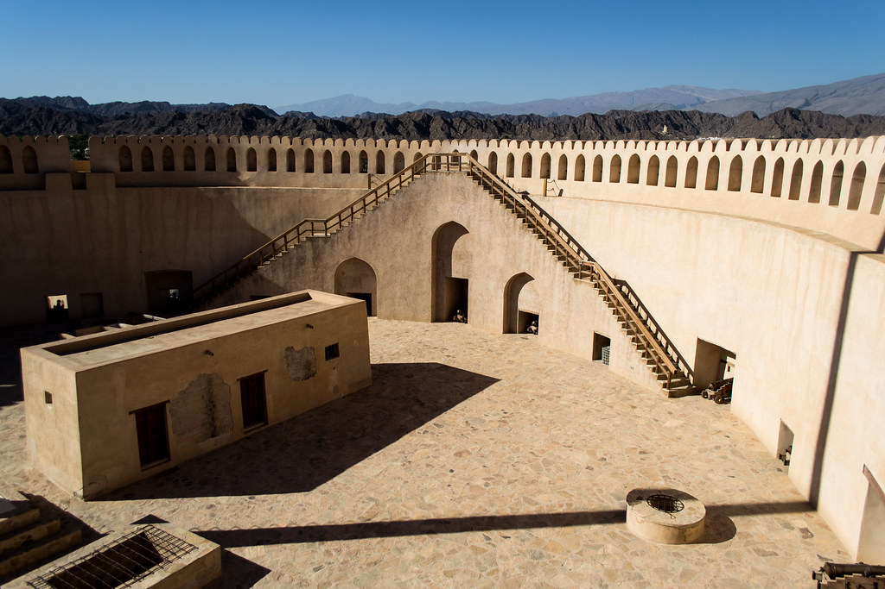

Nizwa Fort

Ajay Suresh
Beginning in the eleventh century AH/middle of the seventeenth century AD, Imam Sultan bin Saif bin Malik Al Yarubi (1649-1679 AD) oversaw the construction of Nizwa Fort. It took twelve years to construct the fort. It has a diameter of 45 m and a height of 34 m. It is a platform with a flat roof that is 30 meters above the ground and 15 meters high, built on a base of crushed stones. There are cannon holes in it.
Souq Nizwa

Robert Wilson
This expansive market, which is home to one of the nation's oldest souqs, specializes mostly in fruit, vegetables, meat, and fish, all of which are kept in different blocks behind the large, crenellated section of city wall that looks out over the wadi. The section of the souq closest to the fort that specializes in handicrafts targets passing tourists.
Falaj Daris
Daniel Gauthier
Falaj Daris, measuring 7990m in length, is one of Oman's largest irrigation canals and one of six such channels designated as a Unesco World Heritage Site in 2006 . Water still runs along the reconstructed section of falaj visible within this lovely park, and there are plenty of shaded picnic areas among blossoming tropical blossoms such perfumed frangipani, peacock flowers (caesalpinia), and bougainvillaea tufts.
Al Aqar tour by Electric carts
Oman Observer
Visitors to Al Aqar village in Nizwa,one of the most important heritage tourist spots in Oman, can ride in electric cars to travel back in the past!
Tanuf Ruins
Rita Willaert
These remains were a completely working community, inhabited by present Tanuf village people until the 1950s. Life was simpler back then, with few of the modern conveniences we have come to expect, as was the case across Oman prior to the Renaissance in 1970. However, the community was devastated and abandoned during the Jabal Akhdar Wars in the 1950s, and the only thing that remains now are the ruins..